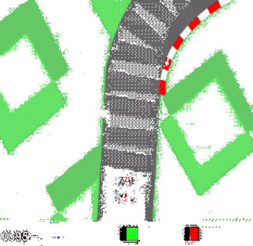
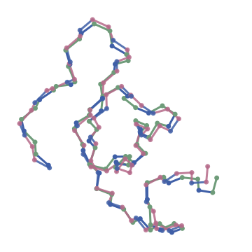
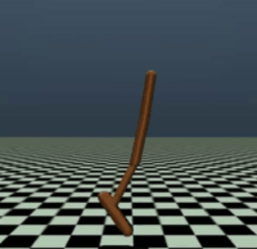
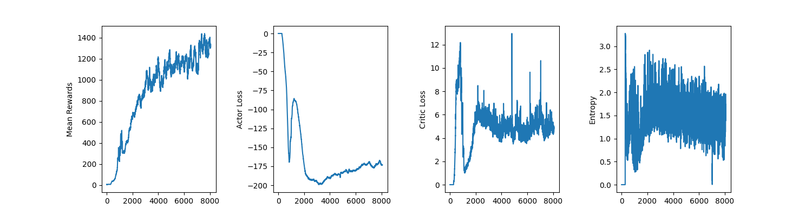
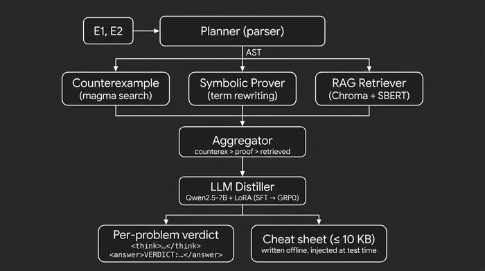
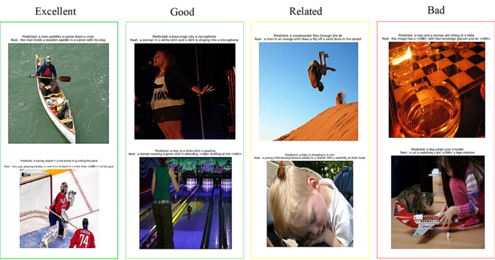
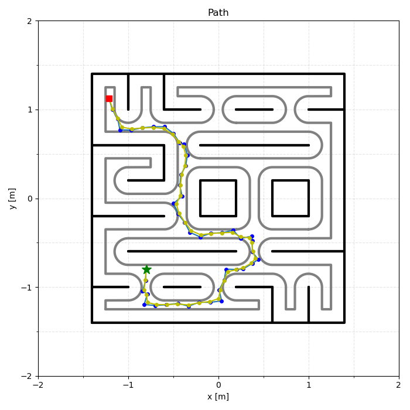
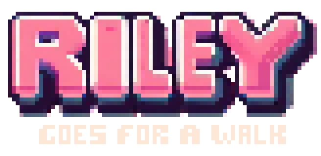

Madrid, Spain · LinkedIn · GitHub · joseridruejotunon@gmail.com
I am finishing an MSc in Advanced Artificial Intelligence at Comillas ICAI in Madrid, where I work on deep reinforcement learning, world models and reasoning models, with a second thread in machine learning for structural biology.
In the summer of 2026 I was a G-RIPS research fellow at Zuse Institute Berlin (Freie Universität Berlin) together with IPAM (UCLA), where I worked on sparse view X ray 3D reconstruction of biological structures. Our method, X-SplineHer, beat NeRF and Gaussian Splatting based baselines, and the work became an oral paper at Off Grid 2026, with an extended version under review at 3DV 2027.
Earlier I spent a semester as an exchange student in computer science at the Colorado School of Mines, and a summer as a Data and AI intern at Accenture. I like taking methods from papers to working code, and I keep most of what I build on GitHub.

A world model without a pixel decoder, implemented in PyTorch: RSSM with Block GRU and Gumbel Softmax latents, a Barlow Twins loss replacing the DreamerV3 pixel decoder (about 1.6x faster training), and a TwoHot distributional critic. Scores: 941 on CarRacing v3, 21711 on Hopper v5, 927 on Walker Walk. Code · Report

An AlphaFold inspired geometric deep learning architecture that predicts 3D peptide backbones from frozen ESM-2 embeddings, with a simplified Invariant Point Attention module and FAPE loss on DBAASP: 2.84 Angstrom mean validation RMSD on 44 held out peptides. Code · Report
Implementation and comparison of 8 uncertainty aware U-Net variants on BraTS 2018, with unified training, calibration and uncertainty metrics, and Bayesian hyperparameter optimization. Code


A reasoning stack built in several stages: LoRA fine tuning, tool calling, retrieval augmented generation over Chroma, and a ReAct agent loop exposed through FastAPI endpoints. Code
Benchmarked and fine tuned open LLMs (Llama, Mistral, Qwen, Granite) with LoRA and SFT pipelines, evaluated on instruction following with IFEval. Code
Reproduction and extension of SimCLR on CIFAR 10 and STL10: ResNet encoders, NT-Xent contrastive learning, linear probing and latent space visualization with t-SNE and PCA.

A Markov voter model with zealots over retweet graphs to estimate political opinion equilibria, built with Polars and sparse Torch on social data.
An autoencoder combined with Laplacian Eigenmaps and UMAP for dimensionality reduction. Code
A compact Variational Autoencoder using PEFT and LoRA techniques for data compression.

An encoder decoder captioning model (InceptionV3 + LSTM) with greedy and beam decoding, evaluated with BLEU and CIDEr on Flickr8K and Flickr30K. Code

An autonomous navigation stack for a TurtleBot3 Burger on ROS 2 Humble: finite state machine wall following controller, Monte Carlo particle filter localization with systematic resampling and DBSCAN, RRT* planner with gradient descent path smoothing, and a pure pursuit tracker, validated in CoppeliaSim and on the real robot. Code
A React and Leaflet frontend for real time route and vehicle tracking, with user and driver modes, geolocation streaming and route visualization. Built during my exchange at the Colorado School of Mines. Code
The Django and Channels backend behind OreCart: WebSocket broadcasting and persistence of driver GPS coordinates, with REST access to the latest location snapshots.
A Python blockchain with Proof of Work mining, a transaction mempool, chain validation, node registration and conflict resolution through a Flask API. Code
An end to end encrypted chat over a stateless WebSocket relay, with RSA encryption implemented on custom modular arithmetic libraries. Code
Geometric visualization in Python of Voronoi diagrams and Delaunay triangulations, with divide and conquer merging and tangent and mediatrix construction. Code
A vision pipeline with camera calibration, shape detection, sequence decoding and object tracking, driving a virtual paper piano. Code
A tactical puzzle game in Godot with constrained dice placement, pattern based attacks, solution hints, progression modes and animated transitions. Code

A turn based hex grid tactics game in Unity and C#, with procedural level generation, BFS pathfinding, enemy AI and WebGL deployment. Code
A chess focused project.